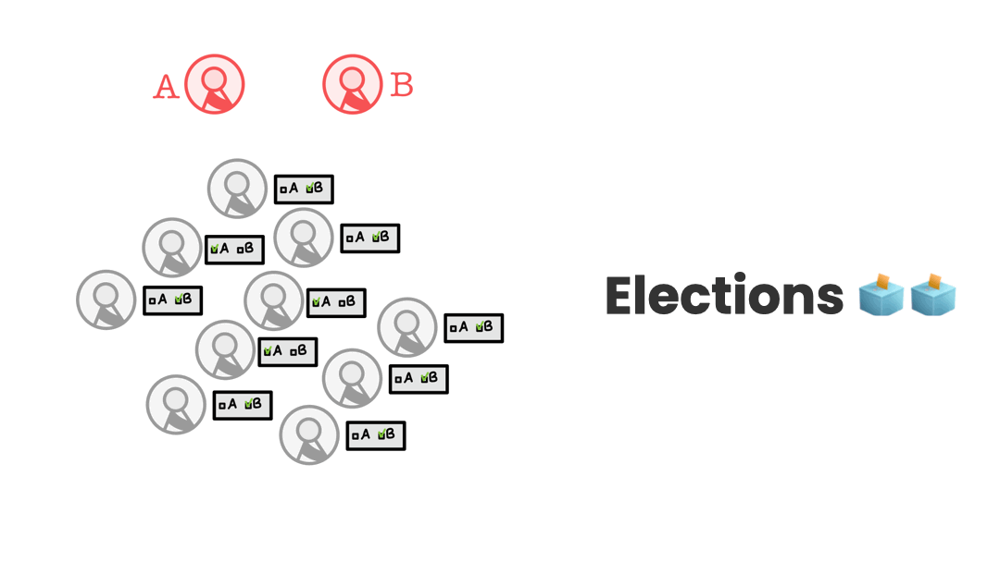

Decentralization with Liquid Democracy, or Diversity and Expertise in Governance
Joint work with Adam Berinsky, Daniel Halpern, Joe Halpern, Ali Jadbabaie, Elchanan Mossel and Ariel Procaccia
 How could we design decentralized and participatory governance processes? Mathematicians have been interested in this question since (at least) the late 18th century, developing theoretical frameworks to benchmark different collective decision protocols. One framework assumes a correct outcome (a priori unknown) and searches aggregation rules that are most likely to find the correct outcome. Of course, this imperfect model does not pretend to be an exact model of reality. Instead, it purposes to formalize or challenge common intuitions.
Most prominently, Nicolas de Condorcet formalized mathematically, through this lens, Aristotle's profoundly democratic intuition according to which groups achieve better outcomes when more people participate under mild conditions. This result falls short when voters are not minimally informed about the decision at stake. Note, however, that this model neglects information voters have about one another: I know little about environmental science and may not be informed enough to know how a carbon tax bill should be drafted, but I may know people I would trust to represent me in shaping environmental regulations. And this information matters both epistemically (enhancing collective intelligence and leading to better outcomes) and procedurally (generating an intrinsically fair and legitimate process).
This interpersonal knowledge could be revealed through endogenous delegations: voters would decide between participating actively in governance or delegating (transitively) their decision to an agent they trust for that particular question. This procedure is called liquid democracy. My co-authors and I studied the mathematical conditions under which endogenous delegations help groups achieve better outcomes ( In Defense of Liquid Democracy). We further ran experiments with 12 groups and found striking alignment between our theory and our experiments (Liquid Democracy in Practice: An Empirical Analysis of its Epistemic Performance). Importantly, these results are for small, well-connected communities and non-political decisions.
These days, I am trying to answer the following questions: how are democratic principles (such as inclusion, equality, diversity and authorization) revealed through liquid democracy? How does it compare to the electoral alternatives? To other democratic innovations, such as sortition? In which context is each procedure most legitimate? (How to Open Democratic Representation?)
Work presented at the Equity and Access in Algorithms, Mechanisms, and Optimization, COMSOC Seminar, Reimagining Democracy Workshop, Workshop on Long Term Risks and Future Generations, Univeristy of Zurich, Harvard University, Massachusetts Institute of Technology, University of Groningen, Google X, Debating Europe, bluenove, Hypermind, Datascientest...
On the size of Congress
Joint work with Daniel Halpern and Tao Lin
However small the Republic may be, the Representatives must be raised to a certain number, in order to guard against the cabals of a few; and however large it may be, they must be divided to certain number, in order to guard against the confusion of a multitude. (Federalist Paper No.10) James Madison
We find the optimal size of a committee, taking again the epistemic view where voters decide on a binary issue with one ground truth outcome (How Many Representatives Do We Need? The Optimal Size of an Epistemic Congress). Each voter votes correctly according to their competence levels in [0, 1]. Assuming that we can sample the best experts (the first-order statistics) to form an epistemic congress, we find that the optimal committee size should be linear in the population size. This result is striking because it holds even when the top experts can be accurate with arbitrarily high probabilities. However, if we assume that the underlying distribution of expertise varies with the population size, such that its mean decreases too fast, then a single expert could asymptotically outperform a majority vote.
If you would like to lear more about the maths of democracy, have a look at Professor Procaccia's fantastic class, Optimized Democracy.
Work presented at the 36th AAAI Conference on Artificial Intelligence, and by Tao at WINE, the Conference on Web and Internet Economics.
Native Ads and the Credibility of Online Publishers
Joint work with Adam Berinsky, Dean Eckles, Ali Jadbabaie and Amir Tohidi
 The digitization of news publishing has resulted in new ways for advertisers to reach readers, including additional native advertising formats that blend in with news. However, native ads may redirect attention off-site and affect the readers' impression of the publishers. Using a combination of observations of ad content across many publishers and two large randomized experiments, we investigate the characteristics of a pervasive native ad format and compare the impact of different native ads characteristics on perceived news credibility. Analyzing 1.4 million collected ad headlines, we found that over 80% of these ad headlines use a clickbait-style and that politics is among the most common topics in ads (The effects of native advertisement on the US news industry).
The digitization of news publishing has resulted in new ways for advertisers to reach readers, including additional native advertising formats that blend in with news. However, native ads may redirect attention off-site and affect the readers' impression of the publishers. Using a combination of observations of ad content across many publishers and two large randomized experiments, we investigate the characteristics of a pervasive native ad format and compare the impact of different native ads characteristics on perceived news credibility. Analyzing 1.4 million collected ad headlines, we found that over 80% of these ad headlines use a clickbait-style and that politics is among the most common topics in ads (The effects of native advertisement on the US news industry).
In two randomized experiments (combined n=9,807), we varied the style and content of native ads embedded in news articles and asked people to assess the articles’ credibility (Native advertising and the credibility of online publishers.). Experiment 1 (n=4,767) suggested that different publishers were impacted differently by the ads and motivated the more detailed design of Experiment 2 (n=5,040). This latter experiment used hundreds of unique combinations of ads, articles, and publishers to study effects of clickbait and political ads. Findings from this pre-registered experiment provide evidence that clickbait and, to a lesser extent, political ads, substantially reduce readers' perception of the articles' credibility: publishers using clickbait native ads may trade short-term revenues for audience trust.
Work presented at the International Conference on Computational Social Science (IC2S2), MIT Schwarzman College of Computing Launch, and Technology, Management, and Policy (TMP) Consortium.
Covered in MIT News: Understanding how people make sense of information in the information age
Varieties of Resonance: The Subjective Interpretations and Utilizations of Media Output in France.
Joint work with Adrien Abecassis and Bo Yun Park
 The resonance of media output plays an important role in the age of misinformation and fake news. While scholars have extensively studied resonance, they have mostly focused on whether and why particular messages align with the predispositions of their intended audience rather than systematically analyzing how they are interpreted by the wider population. Based on a computational text analysis of the media output from more than a hundred different outlets in France and weekly surveys of what people have retained from the news during the same period, this paper investigates the ways in which media coverage trigger different types of resonance in accordance with people’s diverse interpretations and utilizations of the messages to which they have been exposed (Varieties of resonance: The subjective interpretations and utilizations of media output in France). We theoretically argue that resonance is not just an objective alignment between a message and one’s predispositions, but also a subjective interpretation and utilization of the message heard. We empirically identify three different types of subjective resonance: one used for problem-solving, one that is problem-aggravating, and another one that is problem-generating. This research contributes to a better understanding of the mechanisms of resonance by expanding on previous works on the cognitive, emotional, and interactional dimensions of resonance.
The resonance of media output plays an important role in the age of misinformation and fake news. While scholars have extensively studied resonance, they have mostly focused on whether and why particular messages align with the predispositions of their intended audience rather than systematically analyzing how they are interpreted by the wider population. Based on a computational text analysis of the media output from more than a hundred different outlets in France and weekly surveys of what people have retained from the news during the same period, this paper investigates the ways in which media coverage trigger different types of resonance in accordance with people’s diverse interpretations and utilizations of the messages to which they have been exposed (Varieties of resonance: The subjective interpretations and utilizations of media output in France). We theoretically argue that resonance is not just an objective alignment between a message and one’s predispositions, but also a subjective interpretation and utilization of the message heard. We empirically identify three different types of subjective resonance: one used for problem-solving, one that is problem-aggravating, and another one that is problem-generating. This research contributes to a better understanding of the mechanisms of resonance by expanding on previous works on the cognitive, emotional, and interactional dimensions of resonance.
Work presented at the American Sociological Association (ASA) Communication, Information Technologies, and Media Sociology (CITAMS) by Bo Yun Park.
Learn about Tinnitus from Social Media
Joint work with Ryan Boyd, Aniruddha Deshpande, Alain Londero, Vinaya Manchaiah, Guillaume Palacios and Pierre Ratinaud
 Individuals with tinnitus are highly heterogeneous in terms of etiology, the manifestation of symptoms, and the way they manage their condition. Most of these patients are likely to seek hearing health information and social support online via various websites or social media platforms. Indeed, information is easily accessible online. Further, in absence of evidence-based tinnitus care, patients with similar symptoms can regroup, share experiences, and exchange tips. Even after consultation with healthcare providers, some of the patients continue seeking information online when they feel they did not get satisfying information about treatment options and/or about their prognosis. The present study was aimed at examining the discussions around tinnitus in Reddit posts from 12,000 users over 8 years, using various Natural Language Processing (NLP) techniques (Online discussions about tinnitus: What can we learn from natural language processing of Reddit posts?). We examined the free-texts posts to understand the types of conversation about tinnitus in an online forum and the way in which people with tinnitus reach out to other people for support (informational, emotional, etc.) when coping with their conditions. We hope that this can provide insights, complementary to those collected in the clinical environment, to reflect on new ways to support tinnitus patients.
Individuals with tinnitus are highly heterogeneous in terms of etiology, the manifestation of symptoms, and the way they manage their condition. Most of these patients are likely to seek hearing health information and social support online via various websites or social media platforms. Indeed, information is easily accessible online. Further, in absence of evidence-based tinnitus care, patients with similar symptoms can regroup, share experiences, and exchange tips. Even after consultation with healthcare providers, some of the patients continue seeking information online when they feel they did not get satisfying information about treatment options and/or about their prognosis. The present study was aimed at examining the discussions around tinnitus in Reddit posts from 12,000 users over 8 years, using various Natural Language Processing (NLP) techniques (Online discussions about tinnitus: What can we learn from natural language processing of Reddit posts?). We examined the free-texts posts to understand the types of conversation about tinnitus in an online forum and the way in which people with tinnitus reach out to other people for support (informational, emotional, etc.) when coping with their conditions. We hope that this can provide insights, complementary to those collected in the clinical environment, to reflect on new ways to support tinnitus patients.
Work presented at the Virtual Conference on Computational Audiology, (Best Video Pitch Awards).
Covered in Alter Ago Le Mag, Manon Revel: En deça et au-delà des algorithmes
Alternative Realities in Troubled Democracies
Alternative realities are troubling democracy. Eager to discuss these issues beyond academia, I organized conferences and wrote on that issue. Together with Zivvy Epstein and Maurice Jakesch, we organized a workshop to understand, measure and mitigate the spread of alternative realities featuring Renee DiResta and David Rand. For more information, click here. I moderated a panel, Data weaponized, data scrutinized: a war on information, at the Women In Data Science Conference, featuring Camille Francois, Joan Donovan and Bo Yun Park. I also wrote Internet, you lie! (in French) for the French parliamentary journal L'Hémicycle.